Thinking About Algorithms¶
These notes combine multiple sources from prior semesters. Broadly, they discuss:
- data representations vs. interfaces, the strategy pattern (again);
- kd-trees;
- bloom filters; and
- A* search.
We probably won't be able to talk about everything here in class! You'll want to pay special attention to the section on A* search.
Algorithms Evolve, and Algorithms Aren't Magic Spells
All the examples in this chapter present algorithms that evolve from other algorithms. This is a sort of improvisation that the "theory" of the algorithm (i.e., understanding why an algorithm works) enables. Algorithms are not rigid magic spells, to be learned word-for-word and never deviated from. They are general shapes, timeless design patterns that you can reuse and remix, if you know what you're doing.
- A* is an evolution of Dijkstra, which itself evolves from Breadth-First Search.
- Bloom Filters evolve from Hash Maps.
- KD-Trees evolve from Binary Search Trees.
Thinking About Data Representations¶
There's an adage you may have heard before: "the query influences the structure". This means that your choice of data structure shouldn't just be about the shape of the data you get, it should also be affected by what you plan to do with the data.
This may seem obvious, but it's harder than it sounds. It's helpful to make a very careful distinction between the representation of data and the interface it provides. Blurring this distinction leads to pain later in the development cycle. Here's an example.
QUESTION: What's a list?
Think, then click!
It depends.
Do you mean the set of operations one usually expects a list to be able to perform? Adding, removing, index-based accesses, etc.? If so, a list is an object providing that interface to a caller.
Or do you mean a particular data structure? A linked list? Maybe a doubly linked list? A (dynamic) array list? All of these can conform to the List interface, although some of them have to do more work than others for certain operations.
Don't conflate these two meanings. One is about the functionality you must provide; the other is about how you concretely choose to represent your data.
Think Like an Engineer
Keep this in mind when you're splitting up work: decide together on the operations (interface) each component needs from the others early, and keep other criteria broad ("I need you to give me the find operation", and then eventually "I need worst-case \(O(log(N))\) runtime for the find operation"; don't skip right to "I need you to use a Java TreeList").
Just like we can provide the List interface via many different data structures, we can provide algorithmic content like "find the nearest neighbor of an element" in many different ways. Let's look at one you may not have seen before.
Thinking About Algorithms: The Mailbox Problem (KD-trees)¶
In the one-dimensional mailbox problem, you've got a world consisting of buildings positioned on a very long street. Every building has a numeric location on the street; we'll assume it's always an integer.
If I told you that I wanted to give you the addresses of all houses on the street, and you needed to let me check to see whether there was a house at any address, you'd be quite justified in reaching first for the Set interface. You might even go for Map, anticipating I might later want to add more to the data for each house. These tend to be backed by efficient hash-table data structures.
But now there's a twist. I don't just want to check membership (or get data about a specific house). Instead, I've got to route the mail.
Why is this hard? Because I'm doing the routing at a very high level: I'm working for a gigantic or district post office! We can't hand-deliver every piece of mail ourselves. So I need to send letters to the right small, local post office for hand-delivery.
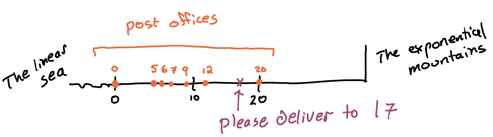
In short, I need to find the nearest neighbor to the target house, from among a set of post office addresses.
You could solve this using a list (or set, or any collection) to store the data points, and a for loop to iterate through them, seeking the nearest neighbor. The trouble is that a linear-time search won't scale as the dataset grows. Our first go-to data structure, the hash table, won't work for nearest-neighbor---hashing will lose information about locality and closeness that are so vital to solving this problem!
Think Like an Engineer
Agree on what you need from the interface, and then figure out what the right implementation is afterward. It's OK to start with something inefficient, and it might even let you explore the problem enough that your second implementation is better than it would have been otherwise.
What would you use instead, if you wanted better performance?
Think, then click!
This is one of several reasons why we still teach you binary search trees (BSTs). BSTs are absolutely perfect for this problem. Not only are they aware of relative positions (and have to be) but it turns out that the ordinary recursive descent you might perform to search for membership also suffices to find a nearest neighbor: you're guaranteed to always find the nearest neighbor somewhere on the descent!
Suppose we store a set of post offices in the following (balanced!) BST:
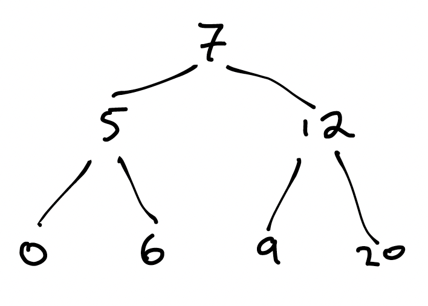
If we're seeking a nearest-neighbor to 17, I claim that it always works to do a search in the tree for 17. If 17 is found, it is its own nearest neighbor. If 17 isn't found, then its nearest neighbor must be on the path taken during the search.
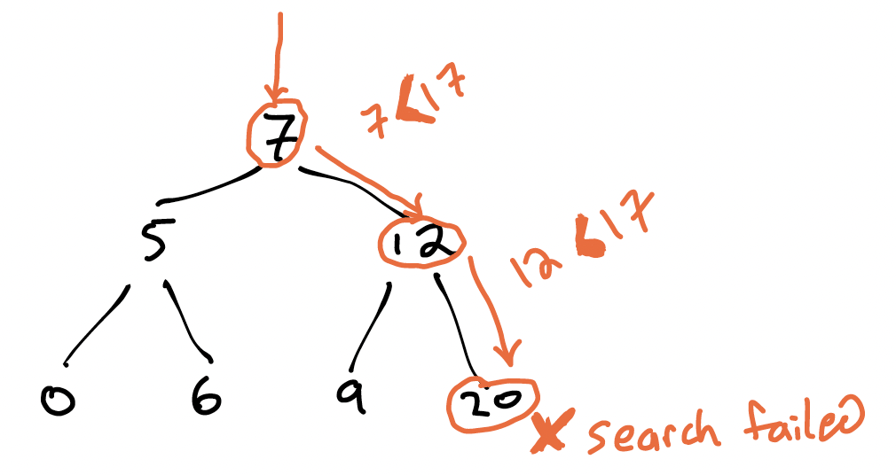
And 20 is the nearest neighbor to 17. It won't always be the last node visited, but it must be on the path.
Why does this work?
Think, then click!
Because every time we move down the tree, we move in the direction of the goal. It would be impossible to visit a node X, where X < goal, and move right when we should have moved left. We get this from one of the BST invariants: every node is less than (or equal to) all its right descendants.
Moving beyond 1 dimension¶
This seems pretty useful, and 1 dimension can be enough for data organized by (say) price or time, where "nearest" still makes sense. But often you really do need more than one dimension. How might we extend a BST for multiple dimensions?
It turns out that there are a few answers. There are solutions, like quad-trees and oct-trees, where nodes have a large number of children. These are often used in (e.g.) video game engines.
Today we're going to explore an alternative solution that retains the binary-tree foundation, but still handles membership and nearest-neighbor queries on multiple dimensions: k-d trees.
(I'm going to completely sidestep the question of balance; it's vital for performance but today we'll be talking about functionality.)
K-d trees have nodes corresponding to k-dimensional points. So, in a tree with two dimensions, we might have points like (0,5) or (6,2). Here's an example of what I mean:
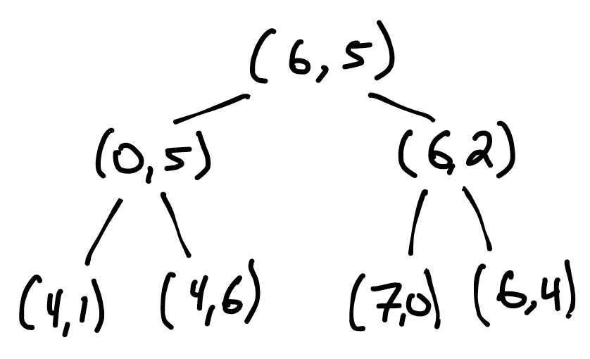
OK, sure: this is a binary tree with 2-dimensional node labels. But what makes it usable in ways other binary trees aren't? A better way to phrase that question is to ask: what are the invariants of a k-d tree?
The key is that every rank in a k-d tree is focused on a single dimension: starting at index 0, then moving on to index 1 and so on, and rotating back to 0. Given that added structure, we can say that for every node P at rank X:
- all left-descendants of
Phave anXcoordinate less thanP.X; and - all right-descendants of
Phave anXcoordinate greater than or equal toP.X.
(I'm making an arbitrary design choice and saying that same-value entries go to the right. Notice that this design choice is more important here than in a BST: there, you can avoid the question by excluding duplicates; here, you'd have to exclude any point from sharing a single dimension from another.)
Here's the tree, annotated more helpfully. (Check that it satisfies the invariants!)
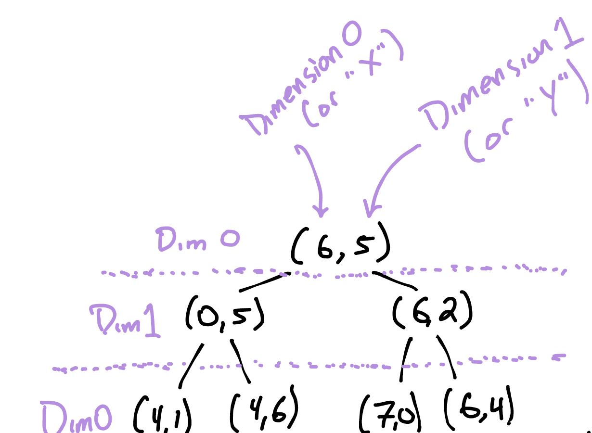
Now how do we actually use these invariants? Since every rank has a single dimension of interest, we might start by doing a normal recursive descent, like we would on a BST, but ignoring dimensions that the current node has no interest in.
Let's try it! We'll search for the nearest neighbor of (5,5) in this kd-tree.
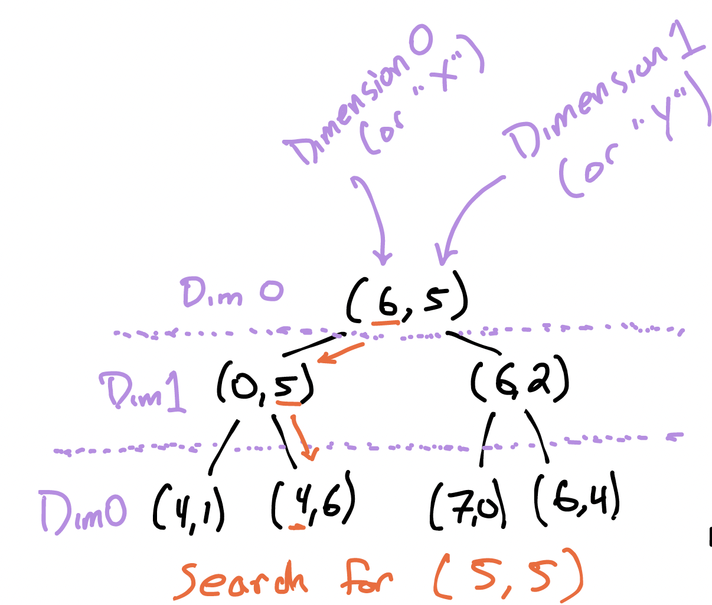
This looks promising; the nearest neighbor is (6,5) and we did visit that node in our descent.
But will it always work? See if you can think of a target (X,Y) coordinate whose nearest neighbor is not along the normal recursive descent.
Think, then click!
(5,4) is one example of this; there are others.
Sadly, this means that we can't always get away with a single descent. Which, yes, means that even a balanced kd-tree has a worst-case search time that's worse than logarithmic in the number of nodes. In fact, the worst-case complexity is linear.
In the average case, it's still much better than a list, though.
Fixing the problem¶
So we can't always get away with a single descent. Surely we aren't doomed to always exploring the entire tree? Maybe we can still exploit the invariants in a useful way. To explore this idea, we'll draw those same 7 points on a 2-dimensional graph, and frame the same search for (5,4):
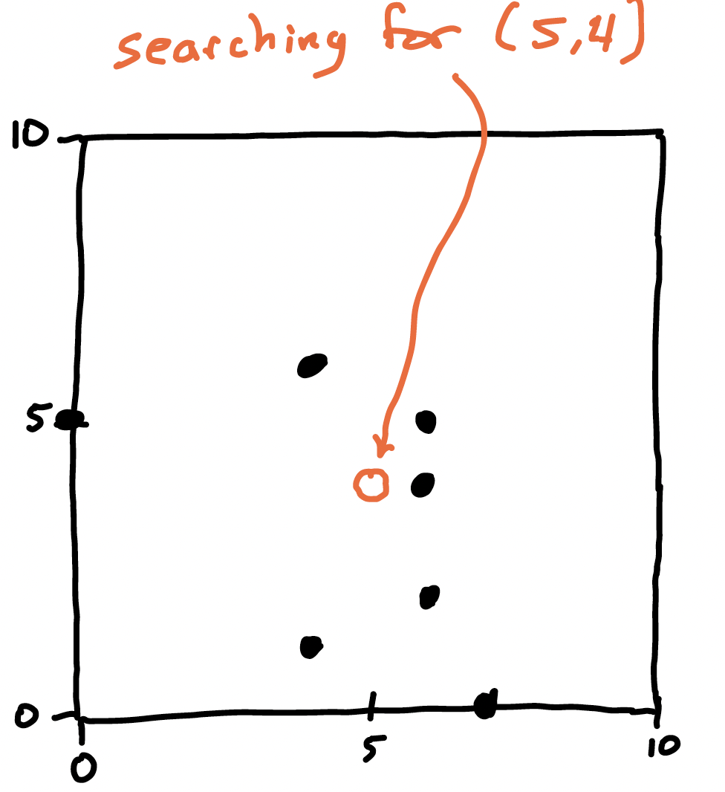
Here is where I notice that my drawing app has grid lines, but the exported images don't. Sigh. (TODO: fix for next semester.)
The purpose of the invariants is, like in a normal BST, splitting the search space between points "bigger" and "smaller" than the current point. We no longer have a single number line, but we can still split the space. The root node, (6,5) is a dimension 0 (X) node, so let's draw a line partitioning the space accordingly:
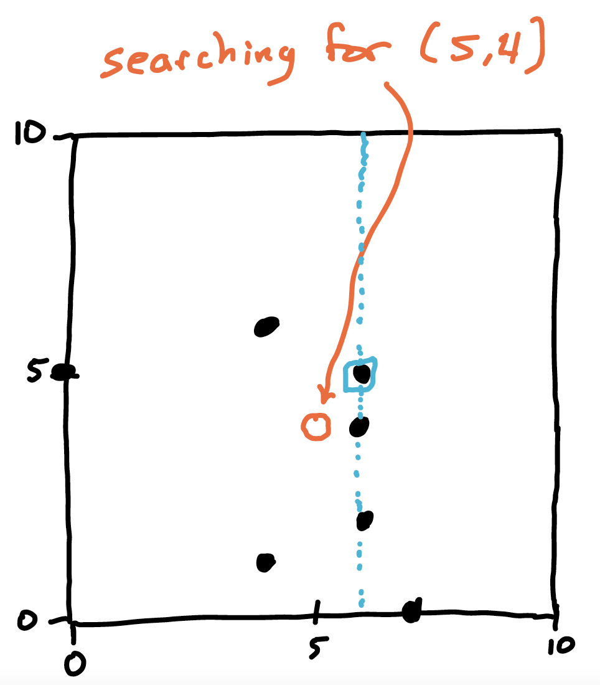
The invariants guarantee that any target node with an X coordinate smaller than 6 must be located in the left subtree of (6,5).
Sure, but that's the same reasoning that got us into trouble in the first place. We know that the nearest neighbor might be, and indeed is, in the right subtree of (6,5).
The trick is in the diagram. How far away from the goal (5,4) is the node we're currently visiting? sqrt(2), assuming that we're using the usual Cartesian distance metric. So we know that any regions of the space further away from the goal than sqrt(2) aren't productive to visit. In fact, let's mentally draw a circle of radius sqrt(2) around the goal:
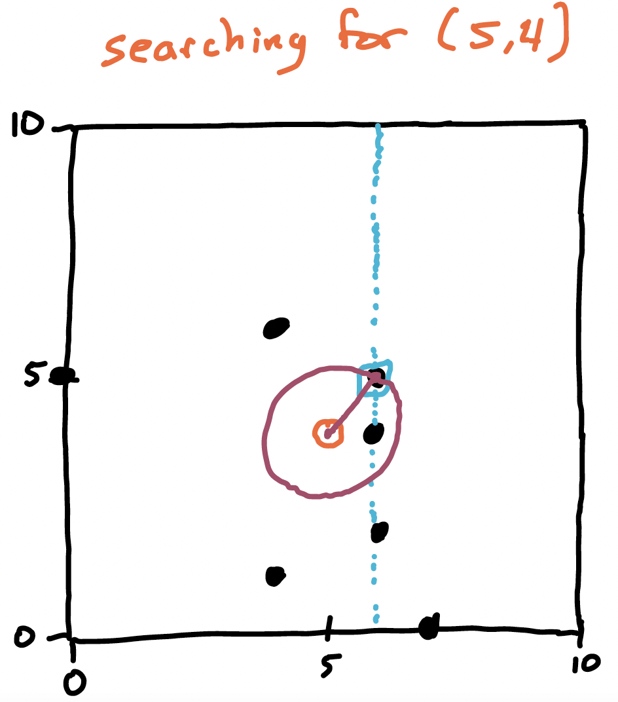
At least, we'll pretend that's a circle.
As we follow the normal recursive descent, we'll draw 2 more dotted lines: one for (0,5) and another for (4,1). But, sadly, our best estimate remains no closer than sqrt(2). We'll pop back up from (4,1) to (0,5) and ask: do we need to explore the right subtree?
Put another way, is there potentially useful space (space inside the circle) on the far side of the dotted line we drew for (0,5)?
By the way, you'll sometimes hear these dotted lines referred to as cutting planes.
Here's a possibly helpful picture:
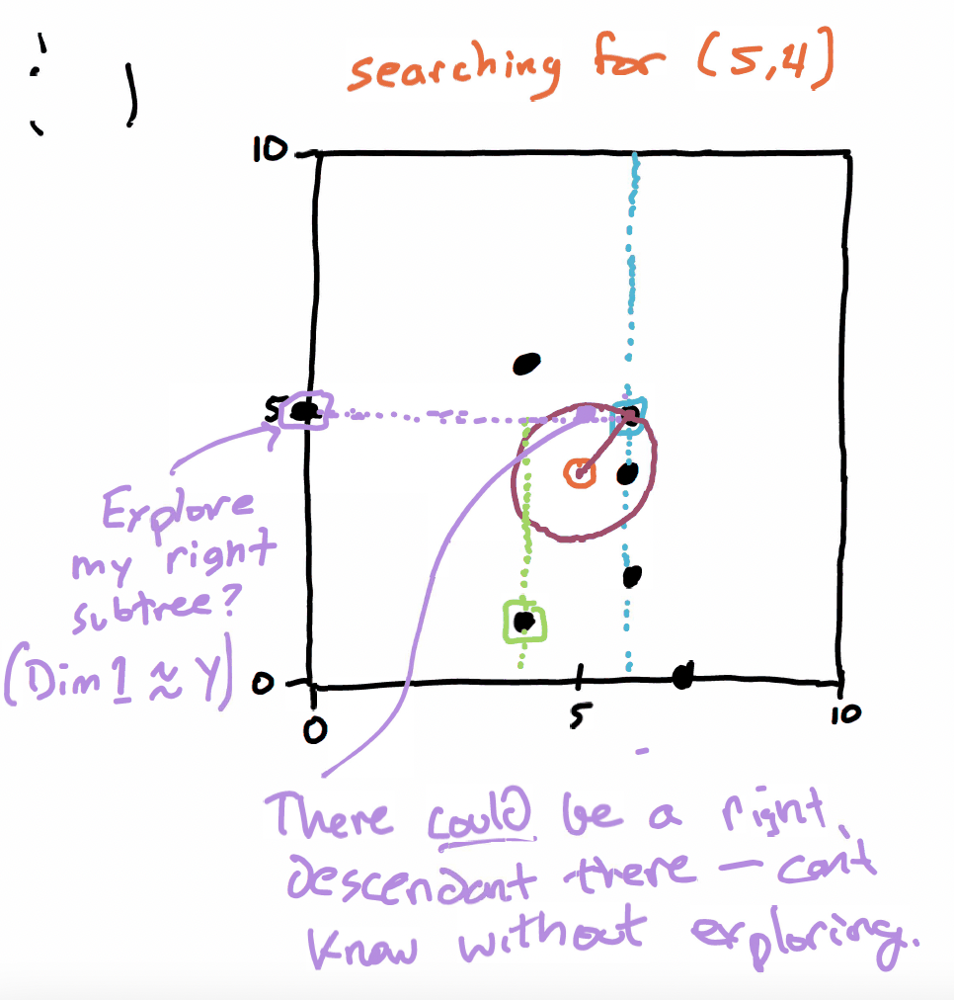
Yes! there's productive space on the far side, and so we do need to recur on the right subtree. In general, we can check for productive space by calculating:
\(|GOAL[d] - CURR[d]| \leq dist(GOAL, BEST)\)
where GOAL is the goal point, CURR is the current node (where we are trying to decide whether or not to recur again), BEST is our best candidate so far, and dist is the distance formula of your choice.
OO Aside: The Strategy Pattern¶
Data structures like this rely heavily on distance metrics, and there isn't one single distance metric that works for every imaginable dataset. Another engineer who is using your data structure might want to provide their own, domain-appropriate metric. But if we code a particular metric into the class, the engineer can't provide their own metric.
Think Like an Engineer
This is an opportunity to exercise a little "technical empathy". We want to allow the other engineer to use our data structure with their own, domain-specific, definitions. This might involve multiple concepts: comparison, distance, and so on.
But don't be an "Architecture Astronaut"! Don't over-engineer things.
OO and FP Agree on the Interface¶
If this reminds you of the dependency injection idea we saw earlier, good! Whether or not we ask the caller to provide the metric to the constructor or at the time we call another method, the idea is the same. Object-Oriented design calls this the strategy pattern; Functional Programming calls this a use of first-class functions: functions or methods that are values in the language itself and thus can be passed as arguments. We've seen first-class functions a lot in TypeScript.
You may have heard that in Java, "everything is an object". This isn't strictly true (because primitives like int exist) but even if it were, like in (say) Scala, I see no reason why a function can't also be an object. After all, objects carry methods.
Distance-Metric Objects¶
At the core of the strategy pattern is humility: we don't pretend to know every possible scenario that our caller might think of, so we give them a way to customize the larger functionality we provide. First, the interface:
Then:
class CartesianMetric implements DistanceMetric<Cartesian> {
@Override
public double dist(Cartesian o1, Cartesian o2) {
// e.g., an implementation of Euclidean distance
// (throw an error if #dimensions is different)
}
}
Every instance of the CartesianMetric class contains a strategy function that data structures can call to measure distance.
A caller could create an object of this type, and pass it to the tree as needed. And they could write more of these, like ManhattanCartesian, and on and on, limited only by their needs and your interface. (You'll provide them a suitable interface, won't you?)
Finally, remember you're free to ask something of them. For instance, if I write a distance-metric method that always returns -1, I'm setting myself up for frustration and debugging in the future through no fault of yours! This seems like a great opportunity to add a contract to the data-structure's documentation. What do you think the caller's metric needs to guarantee?
Thinking About Tradeoffs: Bloom Filters¶
In computer science, we're used to tradeoffs. Specifically, you've all learned about the classic space-time tradeoff that caching gives. You might implement this by memoization, or dynamic programming, or (if you're Google, Netflix, or some other popular website) a Content Delivery Network.
But what else might we compromise on? Here's a thought: can we ever compromise on correctness in exchange for a time or space savings? Does that even make sense? Is it possible we've already done that somehow?
Think, then click!
The basic idea underlying hash tables is a compromise on correctness. They're just built to resolve that compromise internally. Collisions introduce a structured sacrifice: no false negatives, but potential false positives. We invent chaining or probing strategies to recover correctness.
Here's what I mean. If we assume that every record key hashes to a different table key, hash tables are a miracle (constant-time lookup). But this usually isn't true: collisions almost certainly happen. So the table has a (worst-case) linear-time backup plan built in to recover from that compromise.
This idea of compromise on correctness is surprisingly useful. E.g., there exist fast algorithms for prime-number testing that just happen to be wrong sometimes.
Is that enough to build something useful out of? Would you maybe want more?
Think, then click!
Yeah, you'd maybe like something along the lines of:
- only wrong in one direction; and
- only wrong X% of the time.
Technical aside: I am oversimplifying the algorithm a bit, because there are a few other details. You might learn about these if you take a number theory class, or an algorithms class!
Think Like an Engineer
Note again that we're back to what guarantees a data structure or algorithm provides. When you're building or selecting a data structure or algorithm, consider the needs of your caller and/or end-user. In the case of these prime-testing algorithms, they can very quickly rule out many non-prime numbers, and do so fast enough that it's worth using them as a pre-test before applying a slow, but sound, algorithm.
Bloom Filters¶
Bloom filters are a data structure for implementing set-membership queries. They work a lot like a hash table. Indeed, the basic structure they build on is a hash table. They just happen to not return booleans, or at least not in the same sense as (say) a Set in Java. Instead, a Bloom filter returns one of:
- the item is possibly in the set; or
- the item is definitely not in the set.
A Common Use Case¶
They're frequently used as an efficient first-pass check to more expensive membership checks on very, very large datasets. (Think: "No, I don't have that YouTube video stored in this server." or "Yes, I might have that YouTube video---let's look for it.")
Building The Idea¶
Like with kd-trees, Bloom filters build on a simpler idea; in this case, it's hash tables.
Start with an array of bits. We can use that to implement an approximate membership check: just hash the key you're looking for, and see if the bit in that cell of the array is true, rather than false.
Here's an example. Suppose we're in charge of Amazon's Prime TV service, and we want to very quickly tell whether a certain content-delivery network (CDN) node has a show that a local customer requests. We could add a bit array to every node, and when a new piece of media arrived (say, the first chunk of a new series), we'd hash the name of the media and set the corresponding bit to 1. Like this:
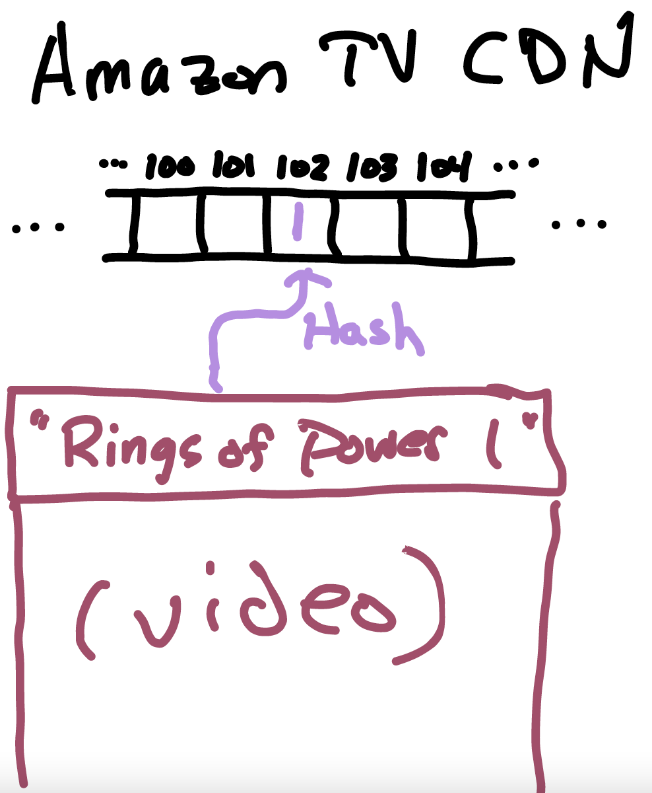
Note one crucial difference. Instead of saving a reference to the media in the table, we're just saving one bit. Very space efficient, especially if we've got a large array.
Now what happens if there's a collision?
Think, then click!
The key that the 2nd arrival hashes to is already set to 1. The array now can't tell the difference between these two media: if a customer requests the second arrival but the first arrival isn't there, the array will report a false positive.
But, either way, a lookup is very, very fast. We can always do a real search through the local media catalogue if the array says we might have what the customer wants. And if the array says it's not here, it definitely isn't.
In short: this data structure allows false positives but not false negatives. Even so, the false positives might make it seem useless, until you think of it as just one part of an overall solution. The table of bits is fast, likely much faster than a real, no-false-positives membership query. If we expect most query responses to be negative, why not try something like:
- When a query arrives, hash it and check the table of bits.
- If the answer is "no", then we can return false right away.
- If the answer is "yes", then we perform the slower, real check and return its result.
Scaling The Idea¶
Bloom Filters are a generalization of this table-of-bits idea. Why not have several hash functions, and use all the bits those hash functions produce for adding and looking up membership? That is, if we have 3 hash functions and they produce {13, 2, 118}, we'd set bits 13, 2 and 118 to true on arrival, and check those same 3 bits on a membership check.
We still have the potential for false positives: two keys might hash to the same values across all hash functions, and even if they don't, multiple keys might have separately flipped all of those bits before our query. But, if we tune things right, it's a lot less likely than it was before. The trick is in picking the hash functions and deciding how big the table needs to be. Other operations, like deletion, also need care to implement properly.
Thinking About Algorithms: Dijkstra's Algorithm¶
This section is a placeholder: see last year's whiteboard notes, to be replaced later.
Thinking about Algorithms: A* Search¶
Let's talk about a problem that you might see in an AI class: helping a robot navigate around a grid-world. The robot wants to find the reward (hidden somewhere in the world) while spending a minimal number of resources in the process. The robot can move up, down, left, or right.
Here's an example: the little smiley face is the robot, and the dollar signs are the reward:
The filled-in squares represent obstacles: walls, mountains, pits, etc. For now, let's say that every move costs \(1\) unit of time, or fuel, or whatever measure we're using.
Assuming we know the contents of the gridworld above, how can we plan a path from the robot to the reward?
Breadth-First Search and Dijkstra's Algorithm¶
One option is to use Dijkstra's algorithm. Actually, since we're saying that every move has cost \(1\), we're safe using a simpler variant: breadth-first search (BFS). BFS just builds a "wavefront" of exploration from the source until it finds the goal: distance-1 cells, then distance-2 cells, and so on.
Note that we're not talking about exploring with the robot in real time; we're executing the algorithm all at once, before the robot starts moving at all. So if I talk about "backtracking" I mean it in an algorithmic sense only.
Here's what BFS might look like on this grid world. We reach the goal after \(5\) hops:
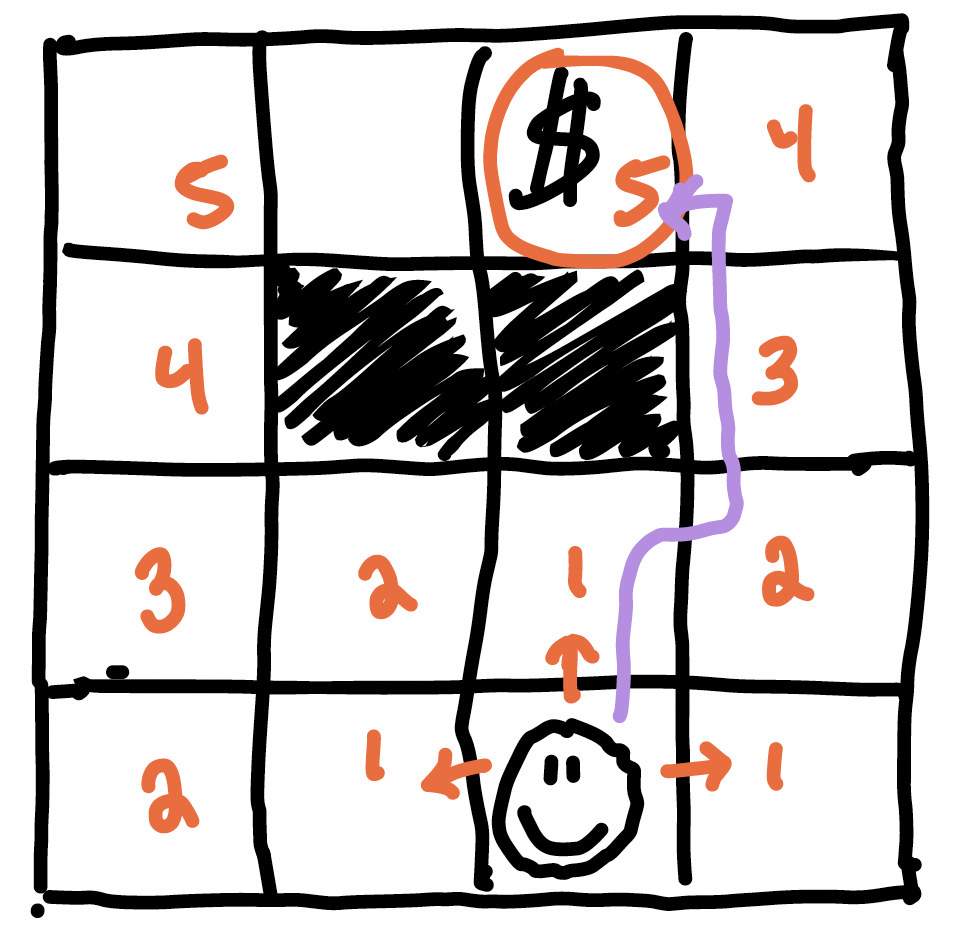
This looks great! It's a simple algorithm, it's pretty efficient, and everything's great. Right?
It turns out that I've drawn the picture in a way that hides something from you. More formally, the abstraction choices I made in drawing this picture excluded some important aspects of the problem.
Here's the picture, slightly changed...
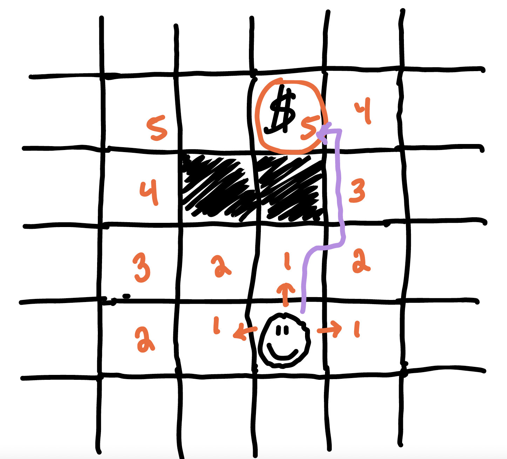
What's the problem? If the world is bigger, BFS will explore a lot of unproductive space before it finds the goal. (To see why, fill in the distance markings in the new cells I just added.)
Neither BFS nor Dijkstra's algorithm takes advantage of any real distance information: they just look at the edge weights. Not all graphs make such information available, and not every geometric setting makes "distance" defined in a useful way. But here, we should be able to take advantage of it.
Greedy Best-First Search¶
Here's an alternative. Let's build a search process that is entirely guided by distance, not by edge weights. Every cell (implicitly; we're not actually going to have to compute them all) has such a distance. We have a few choices of what distance metric to use here, but let's just use ordinary Euclidean distance:
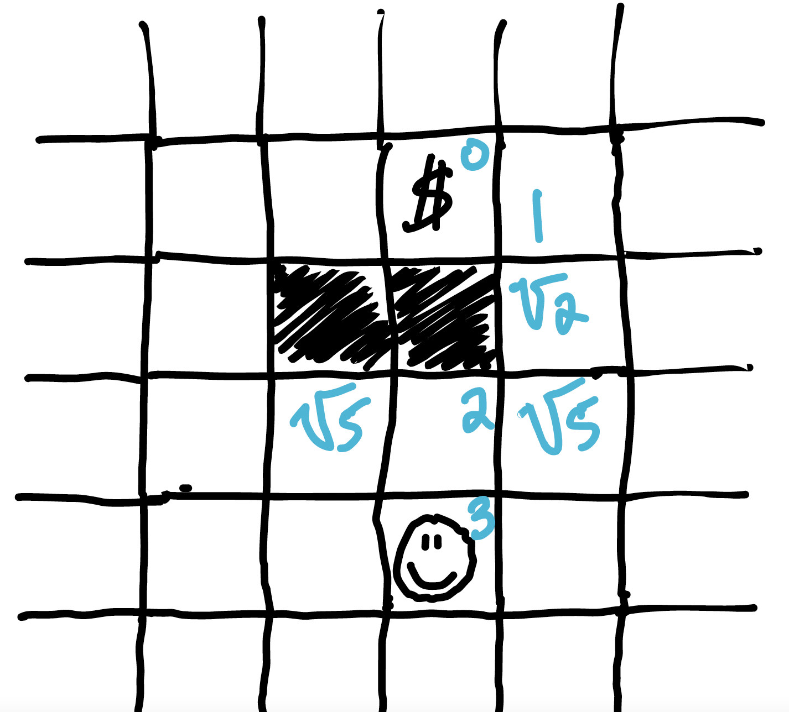
I haven't filled them all in, but the idea is to apply \(\sqrt{(\Delta x)^2 + (\Delta y)^2}\) as needed to every cell. By this metric, the robot starts out at a distance \(3\) from the goal. Moving up would get the robot closer: to distance \(2\). Moving down would bring the robot further away: distance \(4\). So the search process will move up first. In fact, for this example it will only explore the cells I've labeled. There's one branch caused by the obstacle, but it's quickly bypassed to discover the goal.
The Good¶
Greedy best-first search can be much more efficient than Dijkstra's algorithm when working with graphs that represent positions in space.
The Bad¶
What happens when edge weights aren't all \(1\)?
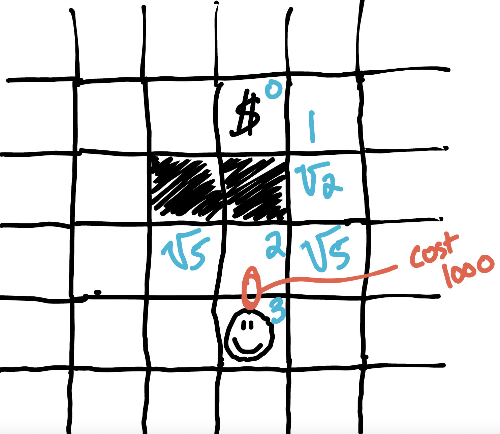
GBFS still finds a path, but it isn't the cheapest path. By changing an edge weight, we've made GBFS non-optimal.
Combining These Ideas¶
We have just invented two different algorithms to solve the same problem. They have different advantages and disadvantages. Perhaps we can somehow combine them to suit our needs? To figure out how to do this, we need to prioritize the properties we want.
- We don't want any fake paths! Neither of the above algorithms produce invalid paths, so hopefully we can preserve this.
- We want cheapest paths. GBFS doesn't guarantee this, but Dijkstra's does.
- We want efficiency. GBFS is often more efficient.
We can combine these two algorithmic ideas to produce another path-finding algorithm called A* (pronounced "A Star"). The core idea of A* is to begin with Dijkstra's algorithm, but include an estimated actual distance in the best-estimate calculations. Rather than looking at only the immediate neighborhood of the current node, A* recognizes that a candidate path must be extended by at least some minimal, "direct" distance in order to reach the goal.
In physical space, this distance metric might be something like the Euclidean distance between the two points. But there are also other distance metrics you might use.
Put another way, given two equal-length paths, the path ending closer to the goal should be considered first. The search can therefore be guided more intelligently. Dijkstra’s algorithm will often spend time exploring the “neighborhood” of the start node, but A* can be goal-directed. For example: between two candidate "next" edges with the same weight, if one would take you further from the goal, it is less likely to be the right edge to take. The beauty of the idea is that, to add in this awareness of overall distance, we just need to make small changes to Dijkstra's algorithm.
In Dijkstra's algorithm, we set the cost d[m] of reaching (unexplored) node m via (explored) node n to d[m] = d[n] + w(n,m), where w is the edge-weight function.
In A*, we need to include the heuristic. But we don't want to count it more than once, so we need two different notions of "distance":
- the actual path-cost from the start to a given node
n(similarly to Dijkstra's); and - the estimated cost of reaching the goal via the cheapest path to that node.
The 2nd cost will be used as the priority-queue key, ensuring that the most promising nodes are processed first: d[n] + w(n,m) + h(m,g), where h is the heuristic distance function. The 1st cost will be used to actually report the real cost of the route. In effect, Dijkstra's h function always returns 0.
Not all heuristics are good!
A* won't report "wrong" paths. However, if h doesn't meet some criteria, it might report paths that are more expensive than they need to be. Put another way, a bad heuristic could cause A* to lose its guarantee of optimality. We rely implicitly on the first time a node is removed from the priority queue corresponding to the last hop on a cheapest path. But if h over-estimates the true cost remaining, A* might explore a non-optimal path first—just like greedy best-first search did.
I'm also glossing over the fact that this version of A* assumes that the heuristic we use obeys the triangle inequality: estimated total cost should never suddenly decrease, i.e., \(h(n) \leq w(n,p) + h(p)\), where \(p\) is a direct neighbor of \(n\). You can think of this like the heuristic-facing version of Dijkstra's requirement that edge weights are non-negative.
For more information about this, take an algorithms course.